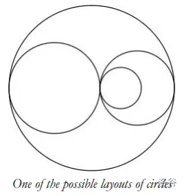

本题来源于：COCI2013-2014 CONTEST #6 Problem 4
题目描述
现在有 N 个以 x 轴为中心的互不相交的圆，但圆周可以接触。请问这些圆把平面分成多少块？
输入格式
输入的第一行包含整数 N，即圆的数目。
下列n行中的每一个包含两个整数 xi 和 ri， xi 表示第 i 个圆的 x 坐标，ri 表示第 i 个圆的半径。
输入中的所有圆保证都是唯一的。
输出格式
输出这些圆把平面分成多少区域。
样例输入输出
2
1 3
5 1
3
3
2 2
1 1
3 1
5
4
7 5
-9 11
11 9
0 20
6
样例 3 解释
该样例对应下图：

数据范围
-
对于 40% 的数据，1≤N≤5×103。
-
对于 100% 的数据，1≤N≤3×105,−109≤xi≤109，1≤ri≤109。